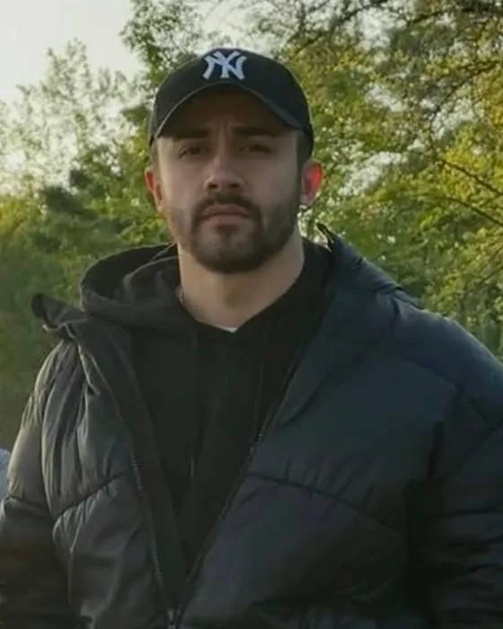
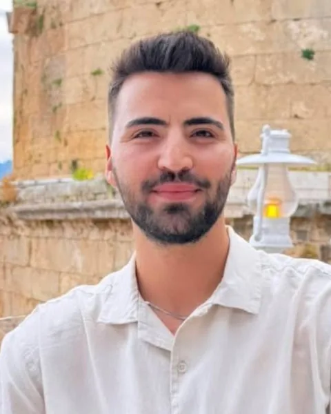

Bir hayalin gerçekleşmesi


Sora Coffee, Yasin Nalbant ve Burak Eren Pancaroğlu tarafından Bucak'ta, kahvenin kalitesini samimi bir atmosferle buluşturmak amacıyla kuruldu. Çıkış noktamız oldukça sadeydi: öğrencilerin ders aralarında nefes alabileceği, herkesin kendini rahat hissedebileceği, iyi kahvenin ve keyifli sohbetlerin bir araya geldiği özel bir mekân yaratmak.
Bizim için kahve, yalnızca bir içecek değil; özen, ustalık ve kaliteyi bir araya getiren bir deneyim. Kahvelerimizi profesyonel baristalarımızın dokunuşuyla taze hazırlıyor, günlük taze tatlılarımızı sizinle buluşturuyoruz. Her ürünümüzde aynı kalite anlayışını korumaya, her ziyaretinizde güzel bir deneyim yaşatmaya önem veriyoruz.
Sora adını gökyüzünden alıyor. Bu isim, mekânımıza yüklediğimiz anlamı da yansıtıyor: günün yoğunluğu içinde insanın kendine ayırdığı küçük ama değerli bir an. Bir fincan kahve eşliğinde gökyüzüne biraz daha yakın hissetmek…
Bizim hikâyemiz, Bucak'ta böyle bir yerin var olabileceğine duyduğumuz inançla başladı. Şimdi bu hikâyeyi sizinle birlikte büyütüyoruz.
Sora Coffee'ye bekleriz. Gelin, tanışalım; kahvemizi ve hikâyemizi paylaşalım.
Gökyüzüne bir kahve kadar yakın